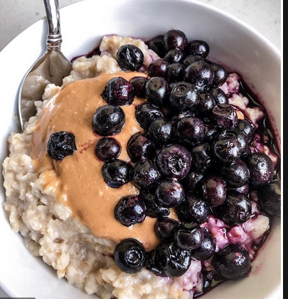

Microwave Oatmeal

For those of us who are too forgetful for overnight oats.
- .25 cup rolled oats
- .25 cup + splash of water
- .25 frozen berries
- 1 tbsp peanut butter
- Add oats and water to microwave safe bowl
- Microwave at 70% power for 1:35
- Once oats are microwaved, immediately add peanut and stir until mixed
- Once peanut butter is melted and mixed add berries